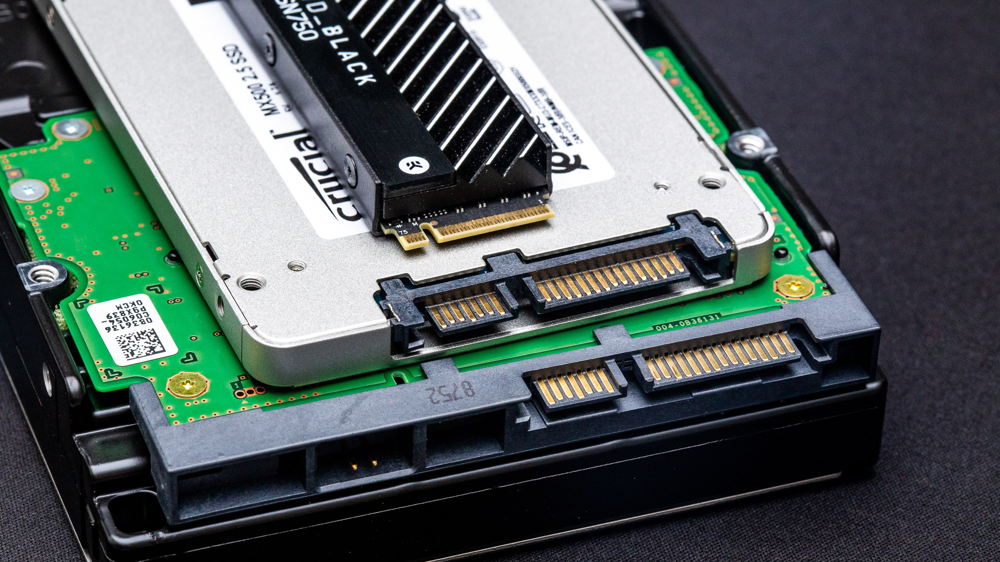

SSD vs HDD: Which One Should You Choose for Your Computer?

When it comes to choosing storage for your computer, two primary options dominate the market: Solid State Drives (SSD) and Hard Disk Drives (HDD). While both serve the same basic function—storing your data—they do so in very different ways, and the choice between them can significantly impact your computer’s performance, cost, and reliability.
What Is an HDD?.
Hard Disk Drives (HDDs) are the traditional form of storage and have been around since the 1950s. They store data magnetically on spinning disks (platters). A mechanical arm reads and writes data on these spinning disks.
What Is an SSD?
Solid State Drives (SSDs) are a newer technology that store data on flash memory chips. With no moving parts, SSDs offer faster performance and better durability.
Choose HDD if:
You need large amounts of storage on a budget.
You use your computer for basic tasks like browsing and document editing.
You're building a media server or backup system.
Choose SSD if:
You value speed and performance (especially for gaming, design, or development work).
You want faster boot and load times.
You're using a laptop and need something energy efficient and durable.
Both SSDs and HDDs have their strengths and weaknesses. The key is understanding your needs and budget. If performance and speed are priorities, an SSD is worth the investment. If storage space and affordability matter most, an HDD is a solid choice.